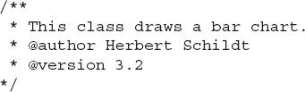
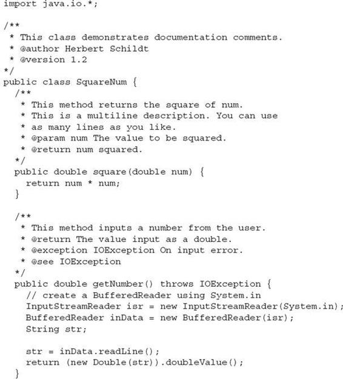
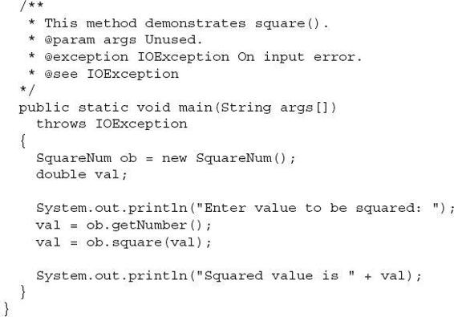

Appendix B
Using Java’s Documentation Comments
As explained in Chapter 1, Java supports three types of comments. The first two are the // and the /* */. The third type is called a documentation comment. It begins with the character sequence /**. It ends with */. Documentation comments allow you to embed information about your program into the program itself. You can then use the javadoc utility program (supplied with the JDK) to extract the information and put it into an HTML file. Documentation comments make it convenient to document your programs. You have almost certainly seen documentation generated with javadoc, because that is the way the Java API library was documented.
The javadoc Tags
The javadoc utility recognizes the following tags:
| Tag |
Meaning |
| @author |
Identifies the author. |
| {@code} |
Displays information as-is, without processing HTML styles, in code font. |
| @deprecated |
Specifies that a program element is deprecated. |
| {@docRoot} |
Specifies the path to the root directory of the current documentation. |
| @exception |
Identifies an exception thrown by a method or constructor. |
| {@inheritDoc} |
Inherits a comment from the immediate superclass. |
| {@link} |
Inserts an in-line link to another topic. |
| {@linkplain} |
Inserts an in-line link to another topic, but the link is displayed in a plain-text font. |
| {@literal} |
Displays information as-is, without processing HTML styles. |
| @param |
Documents a parameter. |
| @return |
Documents a method’s return value. |
| @see |
Specifies a link to another topic. |
| @serial |
Documents a default serializable field. |
| @serialData |
Documents the data written by the writeObject( ) or writeExternal( ) methods. |
| @serialField |
Documents an ObjectStreamField component. |
| @since |
States the release when a specific change was introduced. |
| @throws |
Same as @exception. |
| {@value} |
Displays the value of a constant, which must be a static field. |
| @version |
Specifies the version of a class. |
Document tags that begin with an “at” sign (@) are called stand-alone tags (also called block tags), and they must be used on their own line. Tags that begin with a brace, such as {@code}, are called in-line tags, and they can be used within a larger description. You may also use other, standard HTML tags in a documentation comment. However, some tags such as headings should not be used, because they disrupt the look of the HTML file produced by javadoc.
As it relates to documenting source code, you can use documentation comments to document classes, interfaces, fields, constructors, and methods. In all cases, the documentation comment must immediately precede the item being documented. Some tags, such as @see, @since, and @deprecated, can be used to document any element. Other tags apply to only the relevant elements. Each tag is examined next.
NOTE
Documentation comments can also be used for documenting a package and preparing an overview, but the procedures differ from those used to document source code. See the javadoc documentation for details on these uses.
@author
The @author tag documents the author of a class or interface. It has the following syntax:
@author description
Here, description will usually be the name of the author. You will need to specify the -author option when executing javadoc in order for the @author field to be included in the HTML documentation.
{@code}
The {@code} tag enables you to embed text, such as a snippet of code, into a comment. That text is then displayed as-is in code font, without any further processing such as HTML rendering. It has the following syntax:
{@code code-snippet}
@deprecated
The @deprecated tag specifies that a program element is deprecated. It is recommended that you include @see or {@link} tags to inform the programmer about available alternatives. The syntax is the following:
@deprecated description
Here, description is the message that describes the deprecation. The @deprecated tag can be used in documentation for fields, methods, constructors, classes, and interfaces.
{@docRoot}
{@docRoot} specifies the path to the root directory of the current documentation.
@exception
The @exception tag describes an exception to a method. It has the following syntax:
@exception exception-name explanation
Here, the fully qualified name of the exception is specified by exception-name, and explanation is a string that describes how the exception can occur. The @exception tag can be used only in documentation for a method or constructor.
{@inheritDoc}
This tag inherits a comment from the immediate superclass.
{@link}
The {@link} tag provides an in-line link to additional information. It has the following syntax:
{@link pkg.class#member text}
Here, pkg.class#member specifies the name of a class or method to which a link is added, and text is the string that is displayed.
{@linkplain}
The {@linkplain} tag inserts an in-line link to another topic. The link is displayed in plain-text font. Otherwise, it is similar to {@link}.
{@literal}
The {@literal} tag enables you to embed text into a comment. That text is then displayed as-is, without any further processing such as HTML rendering. It has the following syntax:
{@literal description}
Here, description is the text that is embedded.
@param
The @param tag documents a parameter. It has the following syntax:
@param parameter-name explanation
Here, parameter-name specifies the name of a parameter. The meaning of that parameter is described by explanation. The @param tag can be used only in documentation for a method, a constructor, or a generic class or interface.
@return
The @return tag describes the return value of a method. It has the following syntax:
@return explanation
Here, explanation describes the type and meaning of the value returned by a method. The @return tag can be used only in documentation for a method.
@see
The @see tag provides a reference to additional information. Two commonly used forms are shown here:
@see anchor
@see pkg.class#member text
In the first form, anchor is a link to an absolute or relative URL. In the second form, pkg.class#member specifies the name of the item, and text is the text displayed for that item. The text parameter is optional, and if not used, then the item specified by pkg.class#member is displayed. The member name, too, is optional. Thus, you can specify a reference to a package, class, or interface in addition to a reference to a specific method or field. The name can be fully qualified or partially qualified. However, the dot that precedes the member name (if it exists) must be replaced by a hash character.
@serial
The @serial tag defines the comment for a default serializable field. It has the following syntax:
@serial description
Here, description is the comment for that field.
@serialData
The @serialData tag documents the data written by the writeObject( ) and writeExternal( ) methods. It has the following syntax:
@serialData description
Here, description is the comment for that data.
@serialField
For a class that implements Serializable, the @serialField tag provides comments for an ObjectStreamField component. It has the following syntax:
@serialField name type description
Here, name is the name of the field, type is its type, and description is the comment for that field.
@since
The @since tag states that an element was introduced in a specific release. It has the following syntax:
@since release
Here, release is a string that designates the release or version in which this feature became available.
@throws
The @throws tag has the same meaning as the @exception tag.
{@value}
{@value} has two forms. The first displays the value of the constant that it precedes, which must be a static field. It has this form:
{@value}
The second form displays the value of a specified static field. It has this form:
{@value pkg.class#field}
Here, pkg.class#field specifies the name of the static field.
@version
The @version tag specifies the version of a class or interface. It has the following syntax:
@version info
Here, info is a string that contains version information, typically a version number, such as 2.2. You will need to specify the -version option when executing javadoc in order for the @version field to be included in the HTML documentation.
The General Form of a Documentation Comment
After the beginning /**, the first line or lines become the main description of your class, interface, field, constructor, or method. After that, you can include one or more of the various @ tags. Each @ tag must start at the beginning of a new line or follow one or more asterisks (*) that are at the start of a line. Multiple tags of the same type should be grouped together. For example, if you have three @see tags, put them one after the other. In-line tags (those that begin with a brace) can be used within any description.
Here is an example of a documentation comment for a class:

What javadoc Outputs
The javadoc program takes as input your Java program’s source file and outputs several HTML files that contain the program’s documentation. Information about each class will be in its own HTML file. javadoc will also output an index and a hierarchy tree. Other HTML files can be generated.
An Example That Uses Documentation Comments
Following is a sample program that uses documentation comments. Notice the way each comment immediately precedes the item that it describes. After being processed by javadoc, the documentation about the SquareNum class will be found in SquareNum.html.

